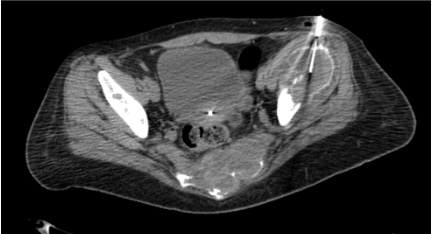

Indications / Contraindications
Oncologic Indications
- Diagnosis and grading of primary bone tumor with nonspecific or aggressive imaging features
- Confirmation or exclusion of bone metastasis in known primary malignancy
- Characterization when patient has multiple potential primary tumors
- Assessment of tumor recurrence / post-treatment change
- Characterization of pathologic fracture (benign vs. malignant), especially vertebral bodies
- Molecular receptor characterization, biomarker testing, NGS for personalized oncologic therapy
- Quantification of treatment response
Non-Oncologic Indications
- Infectious: Osteomyelitis / spondylodiscitis confirmation and culture/sensitivity
- Metabolic/Hematologic: Bone marrow examination for hematologic disease; metabolic conditions
Relative Contraindications
- Coagulopathy (correct first)
- Pregnancy (multidisciplinary discussion; delay post-partum if possible)
- Highly vascular spinal tumors (consider pre-embolization)
- Unstable patient
Absolute Contraindications
- Infection along planned biopsy route (overlying skin/soft tissue that would contaminate target)
- Incomplete pre-biopsy imaging; no safe biopsy path
- Incomplete information regarding surgical excision route when limb-salvage surgery is planned
- Uncorrectable bleeding diathesis; INR >1.5–1.8, platelets <50,000 (threshold before proceeding)
- Unwilling / unable-to-consent patient
Pre-Procedure Checklist
Relevant Anatomy
CT Guidance — Why It Is Preferred
CT provides superb visualization of cortical and medullary anatomy, compartmental boundaries, and adjacent neurovascular structures. Confirms instrument position within bone in real time. Best modality for most bone biopsies.
Target Selection Principles
- Target viable, metabolically active tissue (not necrotic center) — PET/CT most useful for co-registration
- Lytic lesions with soft tissue component: approach through bone into soft tissue component (higher yield)
- Sclerotic lesions: drill technique required; approach through thin cortical region when possible
- Vertebral lesions: transpedicular approach (standard) or parapedicular; avoid disk space (infection risk)
- Extremity lesions: approach MUST be within the planned surgical excision field — consult orthopedic oncology first
Danger Structures
- Neurovascular bundles — adjacent to long bone lesions
- Spinal cord and nerve roots — vertebral biopsies; careful trajectory planning essential
- Lung/pleura — rib and thoracic vertebral biopsies
- Major vessels — pelvic lesions
- Adjacent joints — contamination risk for primary sarcomas; keep needle out of joint space
How I Do It
Default RadCall approach + community cards
Supplies
Steps
Planning CT + positioning
Mark access site, sterile prep
Local anesthesia — periosteum first
Skin incision, advance to cortex

Lytic lesions (with soft tissue component)
Sclerotic lesions
Vertebral lesions (transpedicular)
Specimen confirmation
Post-biopsy CT + hemostasis
Troubleshooting
Unable to penetrate cortex
Likely cause: Dense sclerotic cortex, insufficient force, or inadequate needle gauge.
Next step: Switch to powered drill (OnControl). Try approach through existing cortical defect or periosteal reaction area. Upgrade to larger diamond-tip needle if needed.
Non-diagnostic sample (necrosis)
Likely cause: Sampling central necrotic region of tumor; common in large aggressive tumors or post-treatment lesions.
Next step: Reposition needle to periphery of lesion. Use PET/CT co-registration to identify and target viable/metabolically active tissue. Consider obtaining additional passes.
Specimen fragmentation
Likely cause: Excessive suction, rapid withdrawal, or mismatch between needle gauge and lesion consistency.
Next step: Reduce suction force. Use slower, more controlled coring technique. Ensure correct needle gauge is selected for lesion type (larger bore for soft lytic lesions).
Lesion not visible on CT
Likely cause: Incorrect CT window settings; purely medullary extent not visible on bone window; subtle sclerotic lesion.
Next step: Review in bone window for sclerotic lesions and soft tissue window for lytic lesions. Compare to MRI for medullary extent. Consider PET/CT guidance for metabolically active but CT-occult lesions.
Profuse bleeding from lytic vascular lesion
Likely cause: Hypervascular metastasis (renal cell carcinoma, thyroid, plasmacytoma). Always anticipate before starting.
Next step: Be prepared before starting — consider pre-embolization for hypervascular spinal lesions. Gelfoam embolization through coaxial sheath on withdrawal. Hemostatic gauze at entry site. Keep coaxial sheath in place until bleeding controlled.
Needle fracture / hardware failure
Likely cause: Excessive force on dense sclerotic bone; not advancing intermittently; significant needle bending before fracture.
Next step: Replace stylet into the cannula to reinforce it before attempting extraction. Use an orthopedic torque device if available. If fragment is retained: surgical consult, covering antibiotics, plain film to document location. Prevention: advance slowly and intermittently in sclerotic bone; stop if significant bending is observed.
Fracture risk / impending fracture
Likely cause: Large lytic lesion in weight-bearing bone (femoral neck, acetabulum, vertebral body) with cortical breach.
Next step: Discuss with orthopedic surgery before proceeding. May require prophylactic fixation before or concurrent with biopsy. Do not biopsy through weight-bearing cortex if fracture risk is high without surgical backup plan.
Complications
Procedure-Related
- Non-diagnostic biopsy (5–20% depending on lesion type and size; highest for small sclerotic lesions) — management: rebiopsy if clinical suspicion remains; consider open surgical biopsy
- Bleeding/hematoma — generally low for bone procedures; higher for hypervascular lesions (RCC metastasis, thyroid, plasmacytoma) — local hemostasis, observation; rarely embolization
- Fracture — risk with large lytic lesions in weight-bearing bones — prophylactic fixation pre-procedure for impending fracture
- Pneumothorax (rib/thoracic vertebra biopsies) — small: observation; large: chest tube
Serious / Delayed
- Tumor seeding along biopsy tract — incidence <1% with proper planning but can lead to local recurrence if tract is not excised; key reason biopsy tract must be within planned surgical excision field
- Neurological injury (vertebral procedures) — rare with proper trajectory and careful CT guidance; management: immediate neurosurgical consultation
- Infection (<1% overall; higher for vertebral procedures) — antibiotics; interventional drainage if abscess forms
Post-Procedure Care
Monitoring
- 2h observation post-procedure; longer for vertebral/pelvic procedures
- Neurological assessment after vertebral biopsies (q30 min × 2h)
- Pain assessment and management — bone biopsies are more painful than soft tissue procedures; anticipate and treat proactively
- Weight-bearing restriction 24–48h if lower extremity lesion or impending fracture risk
- Discharge criteria: stable vitals, pain controlled, neurological status intact (vertebral cases)
Results Planning
- Pathology typically 2–5 days (molecular/NGS may take 1–2 weeks)
- Discuss timeline and expectations with patient at discharge
- Plan MDT review with oncology, surgery, and radiation oncology before determining next step
- Ensure clear point of contact for results communication — do not leave patient without a follow-up plan
- Document biopsy tract location in report — critical information for surgical planning
Critical Pearls
Specimen Handling
| Purpose | Container / Medium | Notes |
|---|---|---|
| Standard histology (H&E, IHC, molecular testing) | 10% formalin | Light microscopy, immunohistochemistry, FISH, most molecular tests |
| Culture (bacterial, fungal, mycobacterial) | Sterile saline or culture media | Never formalin — kills organisms. Separate needle pass or fresh core. |
| Flow cytometry (suspected lymphoma / myeloma) | Fresh saline or RPMI | Must reach lab fresh — call pathology for pickup protocol |
| Electron microscopy (if needed) | Glutaraldehyde | Rare; usually for small round cell tumors requiring ultrastructure |
| Fresh frozen / NGS (sarcoma centers) | Dry snap-frozen or RPMI | For molecular profiling; confirm protocol with pathology before procedure |
Intraoperative Quality Check
- Examine cores under dissecting microscope to confirm bone/tumor tissue before dismissing patient
- Sarcoma centers: frozen section may be performed intraoperatively to confirm adequate cellularity
- Obtain minimum 2–3 adequate cores; more for heterogeneous lesions
- If cores appear necrotic/acellular: reposition to periphery and obtain additional passes
Labeling Protocol
- Label every container immediately with: patient name, MRN, date, site, pass number, depth
- Call pathology before the procedure — confirm containers, gauge, quantity, and special requirements
- Some NGS/molecular profiling requires fresh frozen tissue — coordinate logistics before starting
- Document which container holds which pass in the procedure note